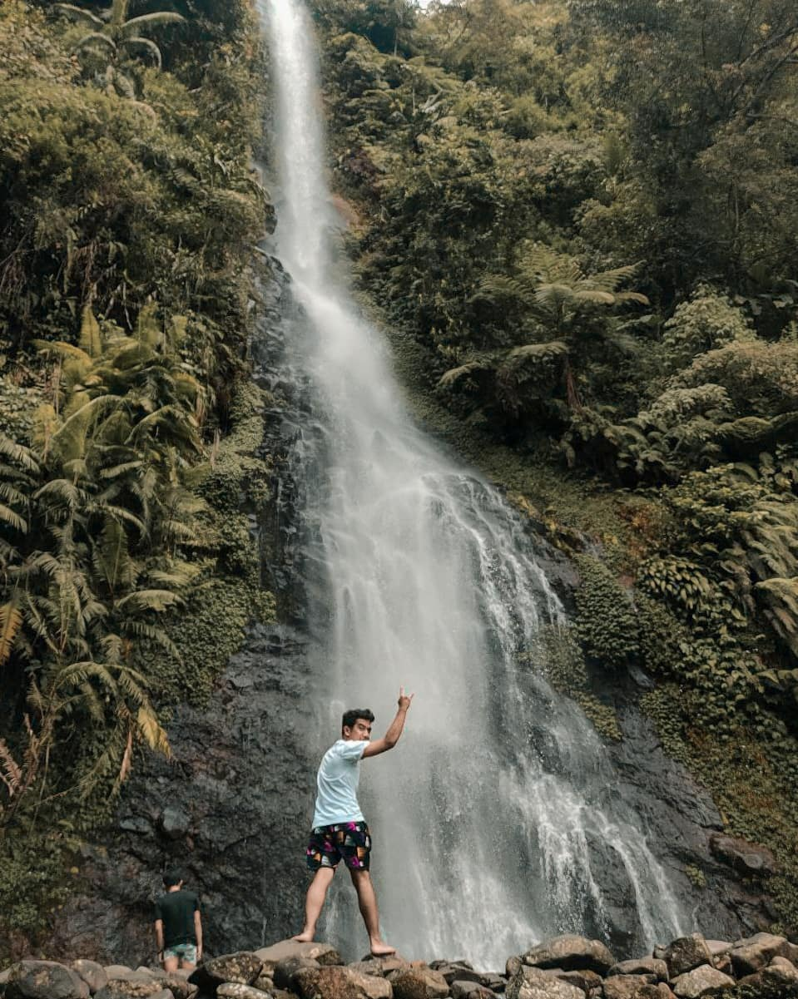
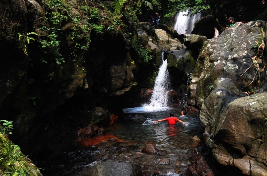
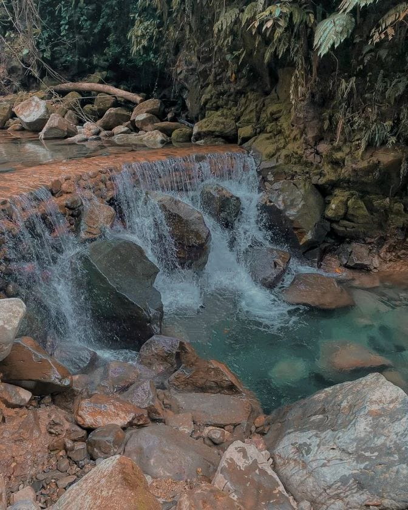

| Gambar | Deskripsi | Lokasi |
|---|---|---|
|  |
Curug Cijalu
Curug Cijalu adalah sebuah objek wisata yang secara administrasi pemerintahan terletak di Kabupaten Subang, Kecamatan Serangpanjang, Desa Cipancar. Curug Cijalu terletak di desa Cipancar kecamatan Serangpanjang Kabupaten Subang. Untuk menuju ke curug Cijalu dari Jakarta bisa menempuh rute Jakarta – Bekasi – Karawang – Kota bukit indah – Sadang Purwakarta Wanayasa. Nama air terjun setinggi 70 m ini berasal dari kata Cai dan Jalu.Konon nama Cijalu berasal dari kedatangan seorang pendekar di tempat tersebut yang dipercaya oleh masyarakat sekitar memiliki taji/jalu (siih dalam bahasa Sunda). |
Cipancar, Serangpanjang, Pusakamulya, Kec. Kiarapedes, Kabupaten Subang, Jawa Barat 41282 |
|  |
Curug ciampea
Yang membuat curug ini menarik tentu saja karena kelestarian alamnya. Alam sekitar curug ini masih terjaga keasriannya, karena sebetulnya curug ini masih ada dalam kawasan Taman Nasional Gunung Halimun. Berada di kaki gunung Salak juga membuat suasana di sekitar air terjun ini sangat sejuk. Airnya juga jernih dan bersih. |
Tapos I, Kec. Tenjolaya, Kabupaten Bogor, Jawa Barat 16370
|
|  |
Lembah Tepus
Lembah Tepus adalah destinasi wisata berupa sungai dan air terjun bertingkat di Bogor. Lokasinya termasuk dalam kawasan Taman Nasional Gunung Halimun Salak (TNGHS). Air terjun bertingkat dengan air yang berwarna biru jernih jadi daya tarik utamanya. Berpagar panorama alam yang asri, Lembah Tepus sangat pas menjadi ‘pelarian’ singkat di akhir pekan. |
Pasir reungit, Gn. Sari, Kec. Pamijahan, Kabupaten Bogor, Jawa Barat 16810 |